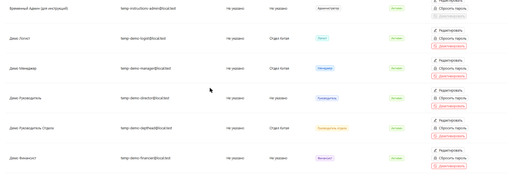
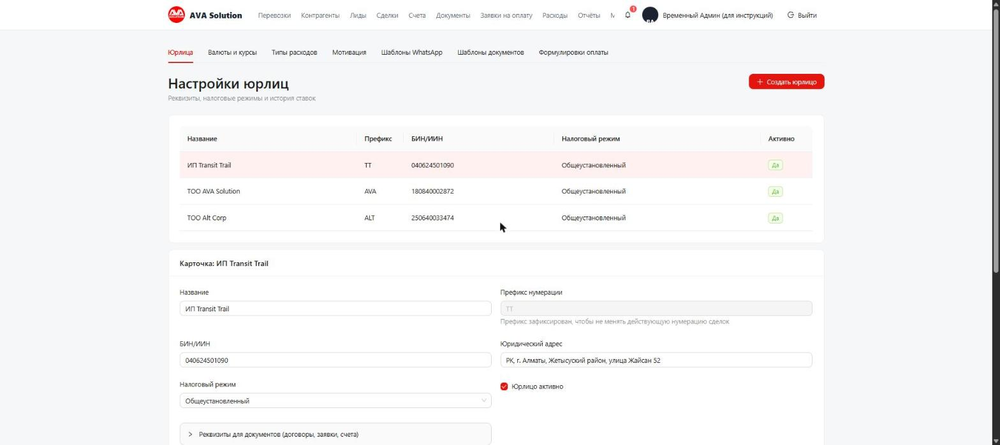
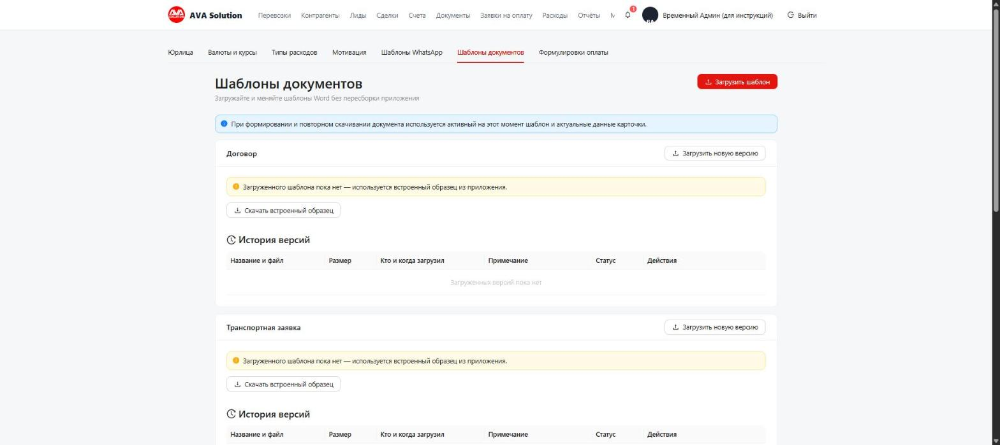

Вы управляете доступом сотрудников и настройками компании: пользователи, юрлица, справочники и бланки документов. Это единственная роль с доступом ко всем разделам системы.
Раздел «Пользователи» — Добавить пользователя: ФИО, email, отдел, одна или
несколько ролей, временный пароль. Сотрудников не удаляют — только деактивируют
(кнопка «Деактивировать»), доступ пропадает мгновенно. Пароль можно сбросить в любой момент.

«Настройки» → «Юрлица»: реквизиты, префикс нумерации (задаётся один раз и не меняется, чтобы не сломать нумерацию сделок), история ставок НДС и налога с дохода по датам — старые ставки не стираются, добавляется новая запись с датой начала действия.

«Валюты и курсы» (курс НБ РК подтягивается сам раз в сутки), «Типы расходов» (для раздела «Расходы»), «Шаблоны WhatsApp», «Формулировки оплаты» для счетов. Всё редактируется без участия программиста.
«Настройки» → «Шаблоны документов»: свой бланк Word для договора, транспортной заявки, счёта или акта можно загрузить и заменить самостоятельно — программист не нужен. Если своего бланка нет, используется встроенный образец. Каждая загрузка — отдельная версия с историей.

База данных и файлы копируются автоматически каждый день, копии хранятся 30 дней —
настраивать вручную не нужно. Инструкция по восстановлению — в файле
deploy/README.md в репозитории проекта, у разработчика.